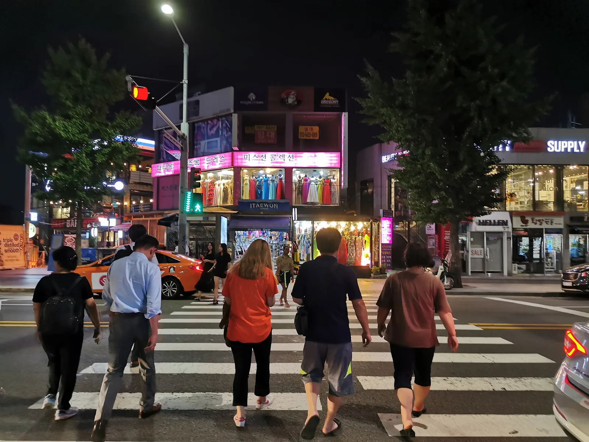
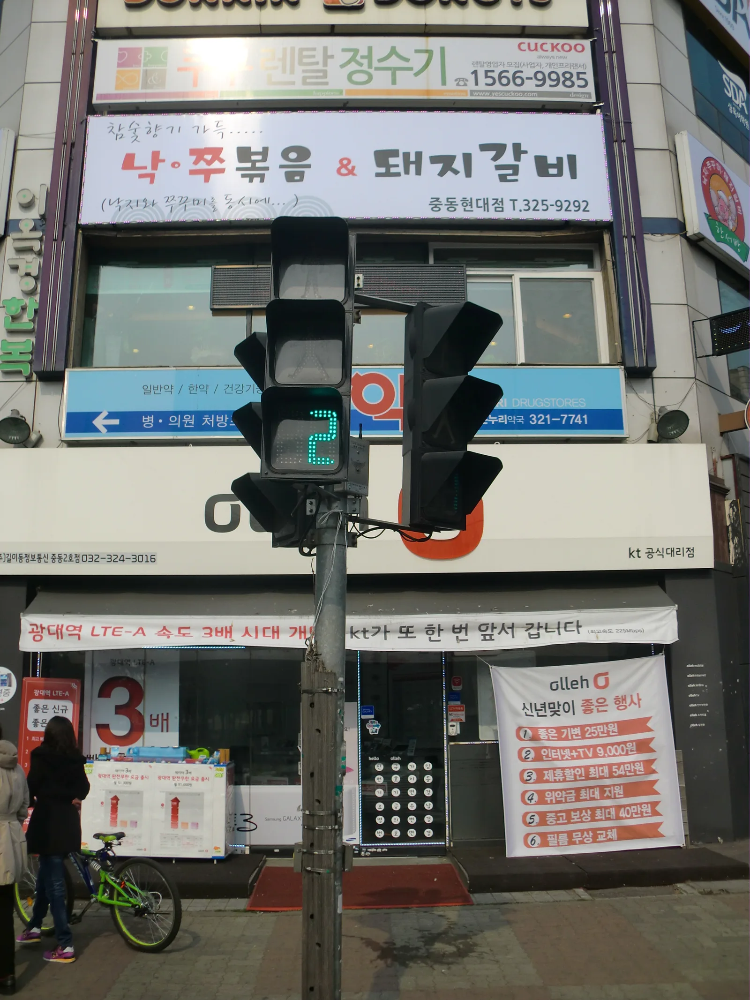
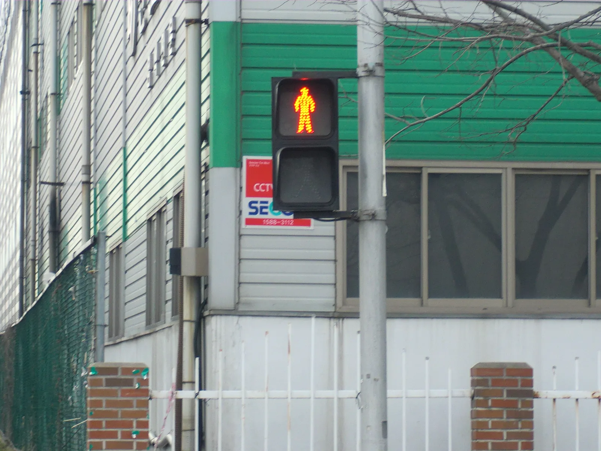
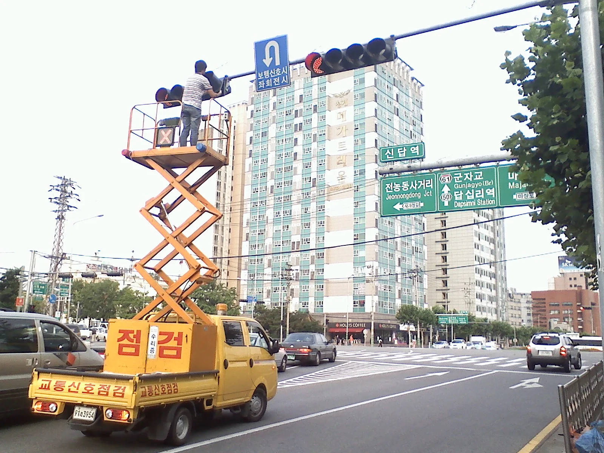

▲ 우회전 직후 만나는 횡단보도에 보행자가 있으면 신호와 무관하게 반드시 일시정지해야 한다 ⓒ Wikimedia Commons (AhmedAlElq, CC BY-SA 4.0)
"분명 신호는 파란불이었는데 왜 딱지를 떼냐"는 항의가 여전히 이어진다.
우회전 시 보행자 보호 의무를 강화한 도로교통법이 2022년 7월 12일 시행되고, 이어 2023년 1월 22일부터는 적색 신호에서의 일시정지 의무와 우회전 전용 신호등 근거가 명문화됐다. 그로부터 3년이 넘게 지났지만, 우회전 일시정지 규정은 여전히 도로 위에서 가장 많이 헷갈리는 규칙 중 하나다. 경찰은 개정 3년 3개월 만인 2026년 4월 20일부터 두 달간 전국적으로 이 규정에 대한 집중 단속을 벌였고, 이후로도 상시 단속을 이어가고 있다. 신호등 유무와 보행자 유무에 따라 정확히 언제 멈춰야 하는지, 2026년 기준으로 다시 정리했다.
1. 법적 근거 — 도로교통법이 정한 우회전 규정
우회전 관련 규정은 도로교통법 제25조(교차로 통행방법)와 제27조(보행자의 보호)에 근거한다. 제25조는 모든 차의 운전자가 교차로에서 우회전하려는 경우 미리 도로의 우측 가장자리를 서행해야 한다고 정하고, 우회전하는 차량 운전자는 신호에 따라 정지하거나 진행하는 보행자·자전거등에 주의해야 한다고 명시한다.
제27조는 모든 차의 운전자는 보행자가 횡단보도를 통행하고 있거나 통행하려고 하는 때에는 보행자의 횡단을 방해하거나 위험을 주지 아니하도록 일시정지하여야 한다고 규정한다. 이 조항이 우회전 시 보행자 보호 의무의 근거다.
규정이 자리 잡기까지 두 단계의 개정을 거쳤다. 1차로 2022년 7월 12일 시행된 개정 도로교통법은 횡단보도를 '건너는' 보행자뿐 아니라 '건너려는' 보행자까지 보호 대상에 포함해, 우회전 시 대기 중인 보행자에 대한 일시정지 의무를 명확히 했다. 이어 2023년 1월 22일부터는 전방 신호가 적색일 때 일시정지 의무와 우회전 전용 신호등의 법적 근거가 새로 담겼다. 두 개정 모두 시행 후 3개월가량 계도기간을 거친 뒤 본격 단속에 들어갔다.
📍 신호등 없는 교차로라면?
신호등이 없는 교차로에서도 원칙은 같다. 횡단보도에 보행자가 있거나 건너려는 낌새가 보이면 일시정지해야 한다. 신호등 유무와 무관하게 보행자 보호 의무(제27조)는 항상 적용되는 기본 규정이다.
정확한 조문은 국가법령정보센터에서 직접 확인할 수 있다. 도로교통법 제25조 원문 보기
2. 신호등 유무·색깔별 기준 — 가장 헷갈리는 부분
가장 많은 오해가 생기는 지점은 "전방 신호가 파란불인데 왜 멈추라는 거냐"는 부분이다. 결론부터 말하면, 신호 색깔에 따라 의무 자체가 달라진다.
| 상황 | 일시정지 의무 | 세부 기준 |
|---|---|---|
| 전방 차량 신호 빨간불 | 있음 (무조건) | 보행자 유무와 무관하게 정지선(또는 횡단보도 앞)에서 바퀴가 완전히 멈춘 상태가 되어야 함 |
| 전방 차량 신호 초록불 | 원칙적으로 없음 | 서행하며 우회전 가능. 단 우회전 후 만나는 횡단보도에 보행자가 있으면 즉시 정지 |
| 우회전 전용 신호등(화살표) 설치 구간 | 있음 (적색 화살표 시) | 화살표가 적색이면 정지선에서 정지, 초록 화살표가 켜졌을 때만 우회전 진행 |
| 대각선 횡단보도 운영 구간 | 있음 | 횡단보도 신호가 초록불이면 보행자 유무와 관계없이 정차, 적색으로 바뀐 뒤 서행 통과 |
📍 "완전 정지"의 기준
경찰이 안내하는 일시정지는 차량 바퀴가 완전히 멈춘 상태를 의미한다. 서행하며 슬금슬금 통과하는 것은 일시정지로 인정되지 않는다. 정지 후 좌우를 살펴 안전을 확인한 뒤 서행으로 진행해야 한다.
3. 보행자 유무별 기준 — 신호등 색깔보다 우선하는 원칙
가장 중요한 원칙은 이것이다: 판단 기준은 보행자 신호등의 색깔이 아니라 '보행자가 실제로 있느냐 없느냐'다.
✅ 보행자 유무에 따른 판단
· 횡단보도 보행자 신호가 빨간불이어도, 무단횡단 중인 보행자가 있다면 일시정지해야 함(보행자 보호 의무는 신호와 무관하게 적용)
· 보행자 신호가 초록불이면 보행자가 없어도 원칙적으로 정지 후 확인하는 것이 안전 — 초록불은 언제든 보행자가 나타날 수 있는 시간대이기 때문
· 보행자가 차도 쪽으로 다가서거나 횡단보도 진입 낌새를 보이는 경우에도 정지 의무 발생
· 보행자가 완전히 지나간 것을 확인한 뒤에만 서행으로 통과

▲ 보행자 신호가 녹색인 구간에서는 보행자가 당장 보이지 않아도 정지 후 확인하는 편이 안전하다 ⓒ Wikimedia Commons
반대로 보행자 신호가 적색으로 바뀌었더라도, 뒤늦게 건너는 보행자나 무단횡단자가 있다면 도로교통법 제27조에 따라 일시정지 의무가 그대로 적용된다. "신호가 적색이니 통과해도 된다"는 판단은 위법이다.

▲ 보행자 신호가 적색이어도 실제 건너는 보행자가 있으면 일시정지 의무는 그대로 적용된다 ⓒ Wikimedia Commons
4. 우회전 신호등, 왜 계속 늘어나나
정부는 우회전 사고를 줄이기 위해 우회전 신호등 설치를 꾸준히 확대해왔다. 2024년 5월 발표된 '교통사고 사망자 감소대책'에 따라 기존 229개였던 우회전 신호등을 400개까지 늘리는 것을 목표로 추진했다.

▲ 우회전 신호등 설치가 확대되면서 관련 점검·정비 작업도 함께 늘고 있다 ⓒ Wikimedia Commons
| 설치 조건 | 내용 |
|---|---|
| 사고 이력 | 동일 장소에서 최근 1년간 우회전 차량 사고 3건 이상 발생 |
| 보행자 상충 | 보행자와 우회전 차량 간 통행이 빈번하게 겹치는 구간 |
| 횡단보도 형태 | 대각선 횡단보도가 운영되는 교차로 |
| 시야 확보 | 좌측에서 접근하는 차량 확인이 어려운 구조적 사각지대 |
📍 우회전 신호등이 있는 곳은 예외 없이 신호를 따라야 한다
우회전 신호등이 설치된 교차로에서는 보행자 유무와 상관없이 신호에 따라야 한다. 적색 화살표일 때 진행하면 보행자가 없더라도 신호위반으로 단속 대상이 된다.
5. 위반 시 범칙금·벌점 — 2026년 기준
우회전 일시정지 위반은 상황에 따라 두 가지로 갈린다. 신호(우회전 신호등 포함)를 어긴 경우와, 신호와 무관하게 보행자 보호 의무를 어긴 경우다. 부과되는 범칙금·벌점이 다르다.
| 위반 유형 | 범칙금(현장 단속) | 벌점 |
|---|---|---|
| 신호 위반 (적색에 진행, 우회전 신호등 위반 포함) | 6만원 | 15점 |
| 보행자 보호 의무 불이행 (횡단보도 보행자 미정지) | 6만원 | 10점 |
| 무인 단속(과태료 기준) | 승용차 7만원 · 승합차 8만원 | - |
⚠️ 보행자와 사고가 나면 훨씬 무거워진다
단순 위반이 아니라 보행자와 실제 사고가 발생하면 교통사고처리특례법상 횡단보도 보행자 보호의무 위반(12대 중과실)에 해당해 5년 이하의 금고 또는 2천만원 이하의 벌금형에 처해질 수 있다. 이 경우 보험 가입 여부와 무관하게 형사처벌 대상이 된다.
6. 실제로 가장 헷갈리는 사례들
단속 현장에서 운전자들이 가장 많이 항의하는 상황을 정리하면 다음과 같다.
✅ 자주 헷갈리는 상황별 정답
· "전방 신호가 초록불이라 그냥 우회전했다" → 우회전 후 만나는 횡단보도에 보행자가 있었다면 위반. 초록불은 정지 의무 면제가 아니라 서행 진입 허용일 뿐
· "보행자 신호가 빨간불이라 사람이 없을 줄 알았다" → 신호와 무관하게 실제 보행자가 있으면 정지해야 함
· "뒤차가 빵빵거려서 어쩔 수 없이 진입했다" → 후행 차량의 압박은 위반의 정당한 사유가 되지 않음
· "우회전 신호등을 못 봤다" → 신설 구간은 표지판이 함께 설치되지만, 인지하지 못했다는 이유로 단속을 면할 수는 없음
· "정지선을 살짝 넘었을 뿐인데 걸렸다" → 정지선을 넘어선 상태에서의 서행은 완전 정지로 인정되지 않는 경우가 많음
경찰은 2026년 4월 20일부터 6월 19일까지 두 달간 전국적으로 우회전 일시정지 위반에 대한 집중 단속 기간을 운영했다. 지난해 우회전 관련 교통사고로 75명이 숨진 것으로 집계되면서, 단속은 집중 기간 이후로도 상시적으로 이어지고 있다.
| 구분 | 수치 |
|---|---|
| 발생 건수 | 1만 4,650건 |
| 사망자 | 75명 (이 중 보행자 42명, 56%) |
| 부상자 | 1만 8,897명 |
| 65세 이상 고령 보행자 비중 | 사망자의 54.8% |
| 보행자 사망 사고 가해 차종 | 승합·화물차 28명(66.7%), 승용차 9명 |
사망자 절반 이상이 65세 이상 고령 보행자였다는 점은, 우회전 차량 운전자가 신호 색깔만 보고 판단해서는 안 되는 이유를 보여준다. 고령 보행자는 보행 속도가 느려 신호가 바뀐 뒤에도 횡단보도에 남아 있는 경우가 많고, 이런 상황에서도 일시정지 의무는 그대로 적용된다.
📍 단속은 사람뿐 아니라 무인 장비로도 이뤄진다
현장 경찰관의 육안 단속 외에도, 일부 교차로에는 우회전 일시정지 전용 무인단속카메라가 설치돼 있다. 정지선 앞 완전 정지 여부를 영상으로 판독하는 방식이라, 짧게라도 멈추지 않고 서행 통과하면 적발될 수 있다.
7. 요약
우회전 일시정지 의무의 핵심은 두 가지 조건이다. 전방 신호가 빨간불이면 보행자 유무와 관계없이 정지선에서 완전히 멈춰야 하고, 신호가 초록불이라도 우회전 후 만나는 횡단보도에 보행자가 있으면 즉시 멈춰야 한다.
판단 기준은 보행자 신호등의 색깔이 아니라 보행자의 실제 유무다. 우회전 전용 신호등이 설치된 구간에서는 적색 화살표일 때 보행자가 없어도 반드시 정지해야 한다.
위반 시 승용차 기준 범칙금 6만원, 벌점은 신호위반 15점·보행자보호 불이행 10점이 부과된다. 보행자와 실제 사고가 나면 12대 중과실로 형사처벌 대상이 될 수 있는 만큼, 우회전 직전에는 일단 멈추고 좌우를 살피는 습관이 가장 확실한 대응이다.